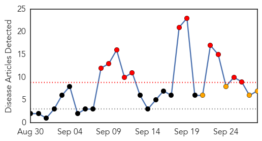
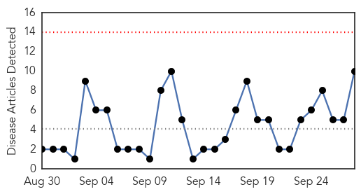

Influenza
30-Day Web Trend
11 alerts, 4 warnings

30-Day Twitter Trend
0 alerts, 0 warnings

Article Locations

Article Confidences

Top Articles:
- 0.992
- Too few in Indiana protected against flu
- 0.983
- Enterovirus found in NC; hasn't hit Henderson County area yet
- 0.940
- CDC recommends most Americans get flu shots
- 0.905
- Retailers inject vigor into flu shot enterprise
- 0.768
- 200,000 Florida Kids to Get Free Flu Shots
- 0.705
- Group to vaccinate 200k Florida students for free
- 0.572
- Why We Don't Have A Cure For The Common Cold
Top Tweets:
-
No tweets found for Sep 28, 2014
Chikungunya
30-Day Web Trend
0 alerts, 0 warnings

30-Day Twitter Trend
3 alerts, 0 warnings

Article Locations

Article Confidences
Top Articles:
- 0.996
- Suspected chikungunya cases close to 2,000, says Chief Medical Officer
- 0.996
- New mosquito-borne virus spreads in Latin America
- 0.992
- Farsnews
- 0.991
- CHIK-V NONSENSE
- 0.990
- Mosquito-borne virus spreads in Latin America
- 0.962
- New mosquito-borne virus spreads in Latin America
- 0.960
- Dr. Fenton Ferguson Address to the Nation Sunday, September 28, 2014
- 0.896
- Chik-V hits crisis proportions
- 0.859
- New mosquito-borne illness spreads
- 0.825
- Health minister says Chik-V cases will spike
Top Tweets:
-
No tweets found for Sep 28, 2014